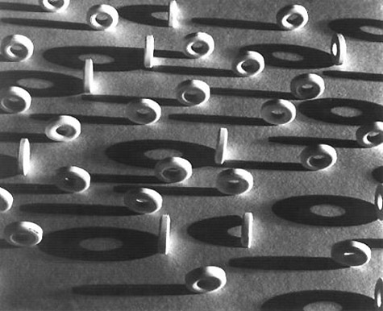

Anthony Jaeger
Term Paper
Ruth Bernhard

This paper is about the renowned photographer Ruth Bernhard.
As a photographer, she ranks with Edward Weston,
Ansel Adams, Minor White, and Imogen Cunningham.
Outline
- Early Years
- Birth of Ruth Bernhard
- Divorce of Mother
- Remarriage of Father
- New York City
- Lucian Bernhard Invitation
- "Get to work"
- great Depression
- Early Photography
- Photograph "Lifesavers"
- Commercial Work
- Art Photography Begins
- Post World War II
- Ansel Adams
- Alfred Stieglitz
- Edward Weston
| Book |
Author |
Publisher |
| Between Art and Life |
Margaretta K Mitchell |
Chronicle Books |
| The Eternal Body |
Margaretta K Mitchell |
Chronicle Books |

Contact me